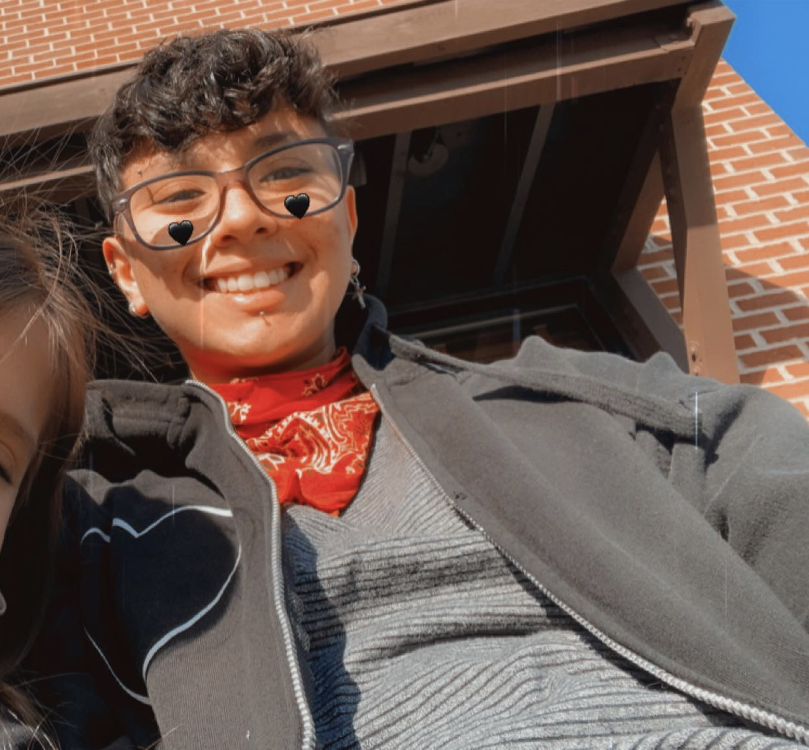

Discord Username: katecore#9905

My name is Kate. I am 24 and I have lived in Illinois my whole life. I have one older sister Jessy and one younger sister named Alyssa. My parents names are Kim and Al. My dad works as a network infrastructure designer for Abbvie and my mom is a housemaker. I major in Computer Science, but it took awhile to make this decision. I first started going to school to study business, then shortly decided to study accounting. It was boring and unsatisfying so I finally made the switch to computer science with intention of becoming a programmer/software developer.
My favorite hobby is playing music. I have played in a punk rock band Cellar Rats since I was 15. In the band I play bass/guitar and sometimes do vocals. On the side I also play the banjo. Other than music I like to play Fortnite and Zombies with my sister.
A fun fact about myself is that I own two snakes. One is a ball python named Julius. The other is a red-tailed boa constrictor named Scarlet.